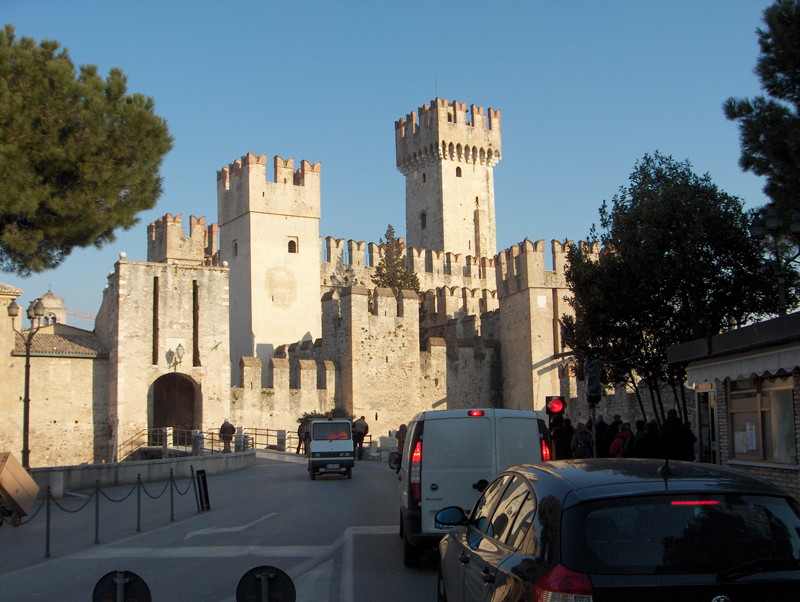
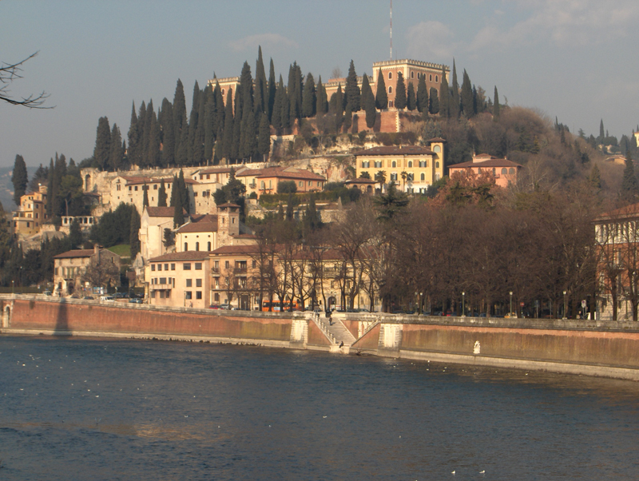
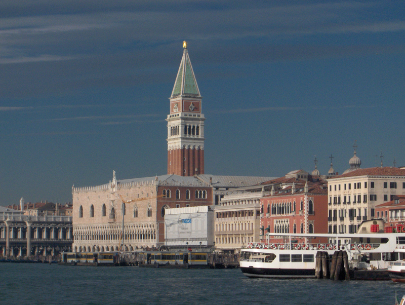
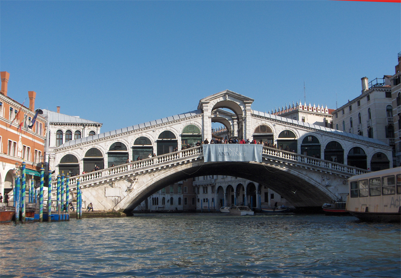
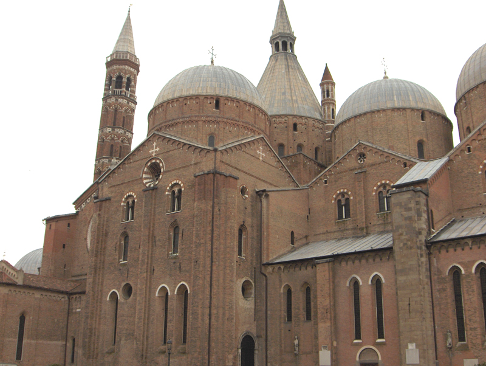
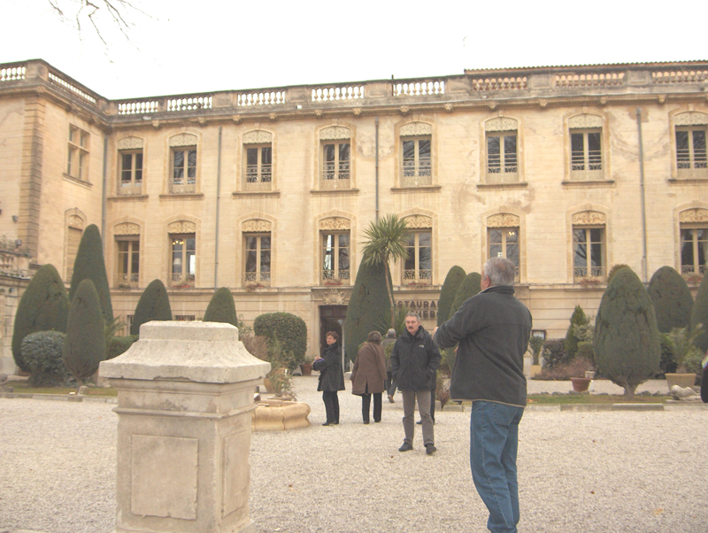
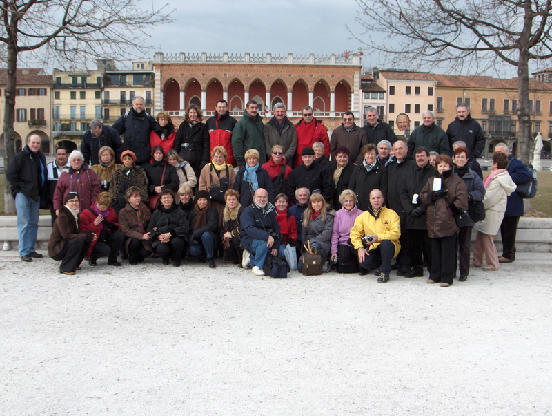

|
Le Carnaval de VENISE
du Lac de Garde à Padoue via Venise
du 31/1/2005 au 5/2/2005
Nous étions 49 au départ matinal le 31 janvier pour l'Italie. Le car complet faisait route vers la Côte d'azur et arrivait vers 19h à l'hôtel à Montichiari près du Lac de Garde qui a une superficie de 360km².

Le 1 er février , très vite nous arrivons à la presqu'île de Sirmione et visitons librement la ville, avec son célèbre château des Scaliger aux remparts crénelés. Puis route vers Vérone où, après le déjeuner, nous récupérons la guide et montons à la colline San Léonardo. Par un très beau soleil, la belle vue sur la ville apparaît brumeuse.Puis nous redescendons visiter les tombeaux des Scaliger de la Piazza Sant'Anastasia, l'amphithéâtre romain arènes du début du 1 er siècle � le palais Barbieri la mairie � le palais de la Gran Guardia de la piazza Bra, la maison des Montaigu « Roméo » en briques et crénelage et la maison des Capulets « Juliette » avec son célèbre balcon, la Piazza dei Signori avec la masse carrée du palais Communal.

Le 2 février départ de l'hôtel de Lido Di Jesolo pour embarquer à Punta Savioni un bateau taxi qui nous faisait traverser la lagune pour Venise.Par un très beau soleil mais froid nous admirons les gens masqués vêtus de costumes royaux et les pigeons nous envahissent sur la place. Vers 11h la guide nous emmène visiter le Palais de Doges très froid et nous terminons la visite par le Pont des Soupirs qui amène à la prison. L'après midi avec un bateau taxi nous allons visiter les deux îles : Murano où sont les souffleurs de verre et Burano joli village de pêcheurs aux maisons colorées où les femmes font la dentelle. La soirée masquée privée fût très réussie.

Le 3 février journée libre à Venise où Gilles, le chauffeur, nous avait trouvé un propriétaire de gondoles pour faire un tour de 40mn dans divers canaux en passant devant le célèbre pont en hauteur le Rialto. Vers 16h nous avons assisté au défilé des costumés sur la place St Marc (l'importance du Carnaval est due à la grande participation des français)
 .
.


Le 4 février , visite de Padoue avec M. Simone et de la magnifique Basilique Saint Antoine appartenant au Vatican : la chapelle du Saint tout en marbre et la chapelle des reliques où dans la vitrine centrale trois reliquaires contiennent la langue, le menton et l'os hyoïdien.

Le 5 février retour à Toulouse depuis Savone en prenant un bon repas à midi au Château de Richebois à Salon de Provence.

La bonne humeur a régnée pendant tout le voyage où le soleil nous a accompagné pendant ces 6 jours.
